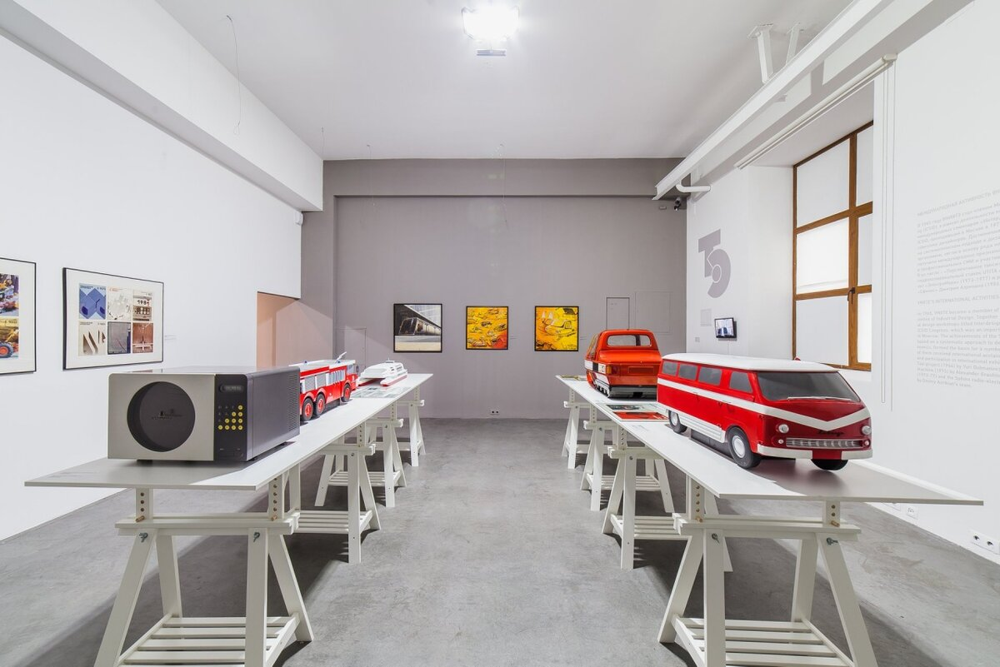

«Эрарта»: место, где каждый может почувствовать себя художником
Санкт-Петербург, Васильевский остров, 29-я линия, 2
Открылся в 2010 году и стал первым музеем современного искусства в Санкт-Петербурге. В собрании «Эрарты» — более 2 800 экспонатов живописи, скульптуры, графики, инсталляций, созданных российскими авторами со второй половины XX века по наши дни.
Одна из задач музея — находить новые лица в искусстве и оказывать им поддержку. Здесь можно увидеть талантливых художников из разных регионов России, чей уровень работ не уступает всемирно признанным авторам.
Еще одна фишка — в сотрудничестве с художниками сотрудники музея создают собственные арт-проекты. В их числе — экспериментальный мультимедийный театр, где спектакли ставят по мотивам картин. Герои полотен оживают, приобретают голоса, для спектаклей пишется музыка и используются оригинальные световые решения. Один из таких спектаклей — «Отчего люди не летают?» — длится 30 минут и проходит в стенах «Эрарты» каждый день, сеансы — в 13:00 и 20:30.
Разместить свою работу в «Эрарте» может каждый — для этого создали уникальный проект «Соты». Вы можете арендовать ячейку на месяц и поместить в нее свое «произведение искусства», стоимость аренды — 1 000 рублей.
Время работы: ежедневно с 10:00 до 22:00 (в день посещения лучше перепроверить, часы могут измениться), вторник — выходной день.
Цена: зависит от конкретной выставки, цены стартуют от 200 рублей. Можно приобрести билет на одну выставку в кассе музея либо купить абонемент на сайте.
Например, годовой абонемент за 1 000 рублей дает возможность посещать все выставки со дня активации, проходить в музей без очереди и получить доступ к аудиогидам. Будьте внимательны — при первом посещении абонемент нужно активировать в кассах 9 и 10.
Контакты: + 7 812 324 08 09.
«МАРС»: искусство с дополненной реальностью
Москва, Пушкарев переулок, 5
Мультимедийная галерея, которая объединяет искусство в его классических формах с цифровыми технологиями — графическим дизайном, дополненной и виртуальной реальностью. «МАРС» предоставляет свою площадку многим современным авторам. Здесь играют с форматами, цветами, светом — каждая выставка дарит зрителям глубокий эмоциональный опыт.
Главное направление «МАРСа» — искусство с дополненной реальностью. В программе — иммерсивные выставки, интерактивные и VR-инсталляции, музыкально-поэтические перформансы, VR-фильмы. Информация об актуальных выставках регулярно публикуются на сайте галереи.
В «МАРСе» также работает коворкинг ARTechnology Club — комфортные рабочие места для фрилансеров, переговорная и уютное кафе. Стоимость одного часа работы — 100 рублей.
В Детском интерактивном арт-центре «Сигнал с планеты Х» можно перенестись в мир с космическими кораблями и роботами. Посещать выставку можно только со взрослыми — единый билет для ребенка и сопровождающего стоит 750 рублей.
Время работы: ежедневно с 12:00 до 22:00
Цена за билет: зависит от конкретной выставки, в среднем — от 400 до 1 000 рублей. Билеты на каждую выставку можно приобрести на сайте галереи.
Контакты: +7 495 623-66-90
«Новый музей»: нонконформистское искусство
Санкт-Петербург, 6-я линия Васильевского острова, 29
Музей советского и современного российского искусства, который вырос из частного собрания мецената и коллекционера Аслана Чехоева.
Уникальность музея в его коллекции, где представлены в основном авторы «Другого искусства» — нонконформистского художественного течения второй половины XX века. Вы увидите работы Льва Кропивницкого, Владимира Немухина, Оскара Рабина, Лидии Мастерковой, Владимира Вейсберга, участников групп «Новые художники» и «Газаневского движения».
В музее регулярно проходят выставки современных известных художников из России, а также работает лекторий, где выступают искусствоведы, художники и арт-критики.
Время работы: со среды по воскресенье с 12:00 до 19:00, с пятницы по вторник — выходные дни.
Цена за билет: 350 рублей
Контакты: +7 812 323 50 90
Московский музей современного искусства (ММОМА): классики русского авангарда и не только
Москва, ул. Петровка, 25 (у музея несколько филиалов в Москве, уточняйте на сайте)
Начало ММОМА положила частная коллекция художника-монументалиста и скульптора Зураба Церетели. Собрание насчитывало более 2 000 работ выдающихся отечественных художников XX века
В центре внимания — работы классиков русского авангарда — Натальи Гончаровой, Аристарха Лентулова, Василия Кандинского, Казимира Малевича.
Но есть и примечательные работы знаменитых европейских художников XX века — Хуана Миро, Пабло Пикассо, Анри Руссо, Марка Шагала, Сальвадора Дали. Здесь также можно познакомиться с трогательными картинами грузинского художника Нико Пиросмани.
В ММОМА регулярно дебютируют начинающие российские художники — поддержке молодых авторов уделяется особое внимание. Также в музее проходят крупные международные фестивали и выставки, ретроспективы известных авторов, можно посещать открытые лекции и конференции искусствоведов и художников.
Время работы: среда—воскресенье с 12:00 до 19:00, пятница—вторник — выходные дни.
Билеты: 350 рублей
Контакты: +7 812 323 50 90
«Заря»: самобытное искусство Дальнего Востока
Владивосток, проспект 100-летия Владивостоку, 155, цех 2, вход 10, этаж 2
Крупнейший центр современного искусства во Владивостоке. «Заря» предоставляет площадку для значимых творческих проектов, которые создают российские и зарубежные авторы.
Изюминка музея — в самобытном дальневосточном искусстве, его представители организуют в «Заре» фотовыставки, интерактивные проекты и инсталляции.
В музее также ведется серьезная работа по поддержке местных художников – здесь открыта первая арт-резиденция на Дальнем Востоке. Профессионалы всех возрастов, которые работают в разных жанрах и техниках, могут подать заявку на участие и в комфортных условиях заниматься творчеством. Лучшим художникам из арт-резиденции предоставляется площадка музея для презентации своих работ.

Время работы: ежедневно с 12:00 до 20:00
Билеты: бесплатно (возможен платный вход на отдельные выставки)
Контакты: +7 423 231-71-00
Музей современного искусствана Дмитровской: местные художники и персональные выставки
Ростов-на-Дону, ул. Шаумяна, 51
МСИИД — крупнейший музей современного искусства на юге России и первый — в Ростове-на-Дону.
В фондах музея — около 2 000 произведений живописи и графики с середины прошлого века до наших дней. В МСИИД привозят работы художников с биеннале современного искусства других стран, организуют лекции и концерты.
Основной акцент делают на поддержку местных художников — часто можно попасть на персональные выставки ростовских авторов.
Время работы: с 12:00 до 19:00, понедельник и вторник — выходные
Билеты: бесплатно (возможен платный вход на отдельные выставки)
Контакты: +7 863 240-38-72